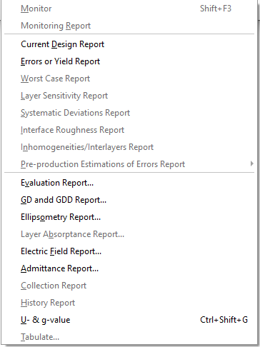
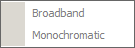

Results Menu
Results Menu
Navigation: OptiLayer Menu Commands >
Results Menu
` <idh_synthesis_options_header.html>`__ ` <idh_optilayer.html>`__ ` <idh_monitor.html>`__
Results menu includes the following items:


Monitor Enables the user to create a / monitoring spreadsheet/ for the design in memory.
Monitoring Report Allows the user to display the / Output window/ with a report containing the monitoring spreadsheet information. The Monitoring Report option is available only if the / OptiMonitor window/ is opened.
Current Design Report Displays the / Output window/ with the report on the current design.
Errors or Yield Report Displays the / Output window/ with Error Analysis or Yield Analysis Report. This option is available when / Error Analysis/ or / Yield Analysis/ has been performed.
Worst Case Report Displays the / Output window/ with the Worst Case Analysis Report. This option is available when the / Worst Case Error Analysis/ has been performed.
Layer Sensitivity Report Displays the / Output window/ with / Layer Sensitivities/ of the current design.
Systematic Deviations Report Displays the / Output window/ with the Systematic Deviations Analysis Report. This option is available when the / Systematic Deviations Analysis/ has been performed.
Interface Roughness Report Displays the / Output window/ with the Interface Scattering Analysis Report. This option is available when the / Interface Scattering Analysis/ has been performed.
Inhomogeneities/Interlayers Report Displays the / Output window/ with the Inhomogeneities/Interlayers Analysis Report. This option is available when the / Inhomogeneities/Interlayers Analysis/ has been performed.
Preproduction Estimation of Errors Report Displays the / Output window/ with the Preproduction Estimation of Errors Report. This option is available when the / Preproduction Estimation of Errors Analysis/ (Broadband or Monochromatic) has been performed.
Evaluation Report Prompts for the / Evaluation Report Setup/ parameters, performs the evaluation, and displays the Evaluation Report in the / Output window/ .
GD and GDD Report Prompts for the / GD and GDD Report Setup/ parameters, performs / GD and GDD Evaluation/ , and displays the GD and GDD Report in the / Output window/ .
Ellipsometry Report Prompts for the / Ellipsometry Evaluation Setup/ parameters, performs the Ellipsometry Evaluation, and displays the Ellipsometry Report in the / Output window/ .
Layer Absorptance Report Prompts for the / Layer Absorptance Setup/ parameters, performs the / Layer Absorptance/ Evaluation, and displays the Layer Absorptance Report in the / Output window/ .
Electric Field Report Displays the / Output window/ with the Electric Field Analysis Report. This option is available when the / Electric Field/ window is opened.
Admittance Report Displays the / Output window/ with the Admittance Analysis Report. This option is available when the / Admittance window/ is opened.
Material Dispersion Report Prompts for the / Material Dispersion Setup/ parameters, performs the / Material Dispersion Evaluation/ , and displays the Material Dispersion Report in the / Output window/ .
Collection Report Displays the / Output window/ with all designs stored in OptiLayer’s / Collection/ .
History Report Displays the / Output window/ with all designs stored in OptiLayer’s / History/ .
U- and g-value Opens a useful window for the architectural glass industry where it is possible to configure a glazing configuration and monitor / U- and g-values/ (DIN EN 410, DIN EN 673 standards).
Tabulate Prompts for the / / / / Tabulate Report Setup/ / / / , creates a table of values of the selected spectral characteristic, and displays the Tabulate Report.
Most of these commands open the / Output Window representing text output of OptiLayer.